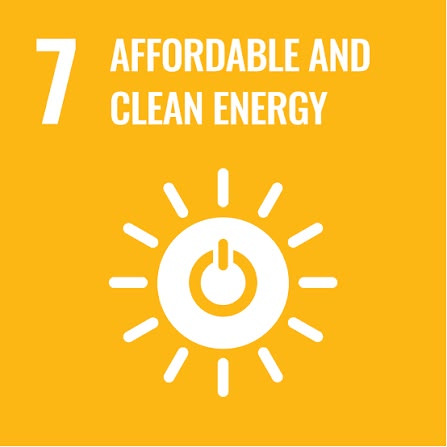

PIEZOPOWER ROAD / MALAYSIA
Harvest by day.
Light the road at night.
A smart-road innovation concept that converts daytime vehicle pressure into stored electrical energy for nighttime LED street lighting.
A smart-road innovation concept that converts daytime vehicle pressure into stored electrical energy for nighttime LED street lighting.
PiezoPower Road is designed around an energy-storage cycle. Vehicle pressure during daylight is converted into electrical energy, stored in a battery, and then used after sunset for LED street lighting.

Official transport statistics report 38.0 million cumulative motor-vehicle registrations by the end of 2024. This is a registration figure, not a count of vehicles passing a particular road each day.
2020–2024 · all motor-vehicle categories

Our piezoelectric road is related to SDG 7 because it explores an alternative method of generating electricity from vehicle pressure. When vehicles pass over the piezoelectric material installed beneath the road surface, mechanical pressure is converted into electrical energy. The electricity generated can potentially be used to power road lights, promoting the use of alternative energy sources and supporting more sustainable energy solutions for road infrastructure.
A short explainer about piezoelectric road energy harvesting and how vehicle loading can be converted into electrical energy.
The key idea is not instant lighting from each vehicle. The system is designed to accumulate small electrical contributions over many vehicle passages and store them for later use.
Vehicle pressure → piezoelectric modules → electrical circuit → battery charging.
Battery → control/power stage → LED street light.